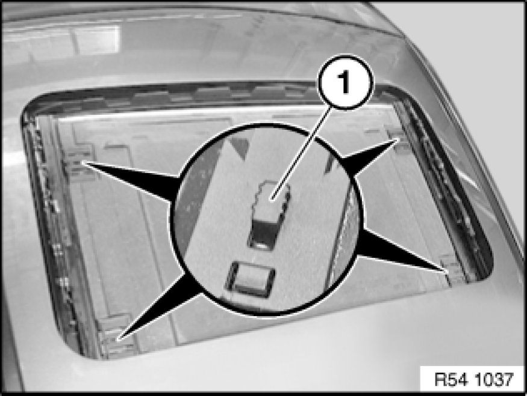
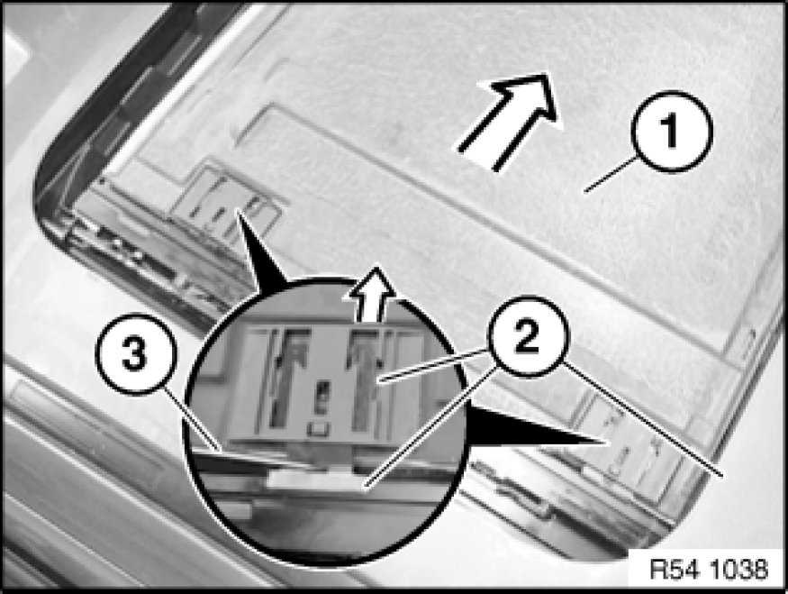
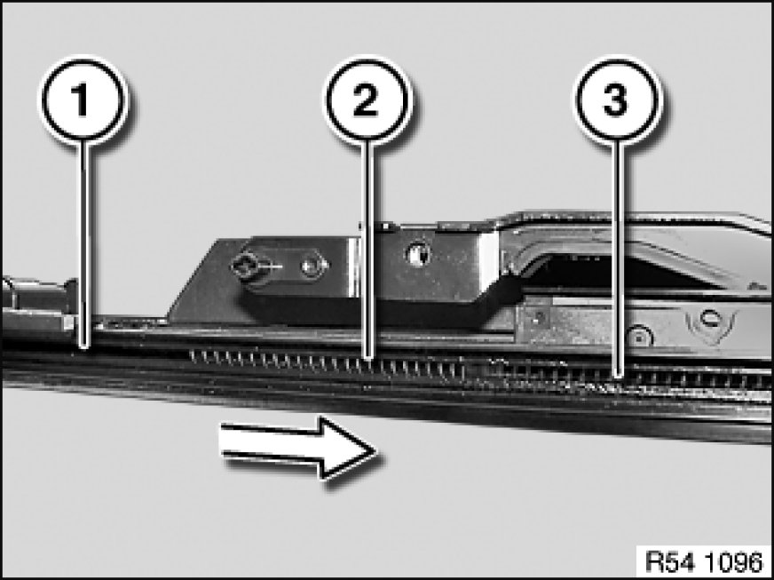
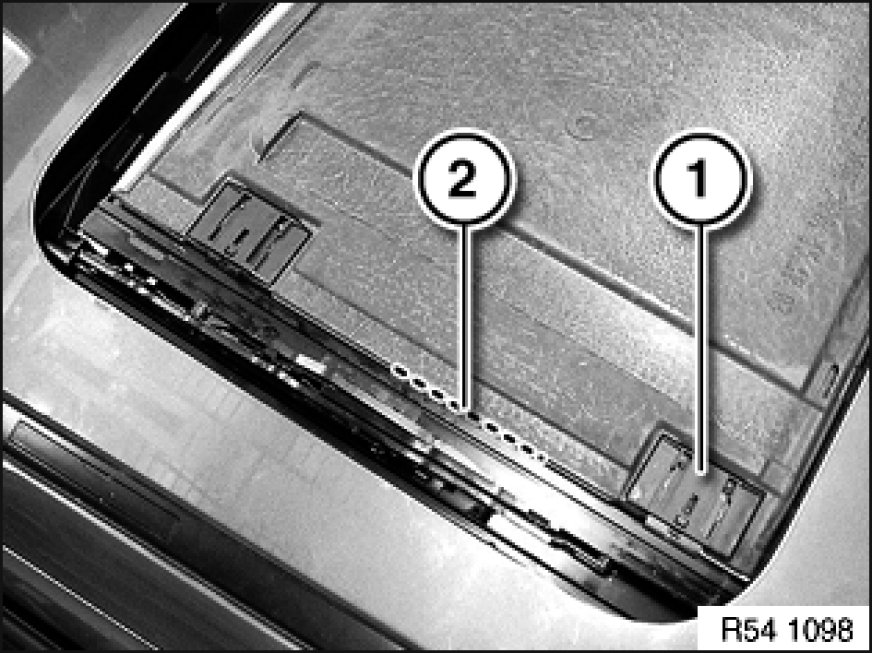

Sunroof / Moonroof Interior Trim Panel: Service and Repair
54 12 136 - Removing and installing/replacing roofliner for glass slide/tilt sunroof

Necessary preliminary tasks:
- Remove rain gutter 54 12 138 Removing and Installing/Replacing Rain Gutter for Glass Slide/Tilt Sunroof

Note:
Carriage of rain gutter must not be situated in area of floating roofliner.
Slightly raise spring stops (1) of slide housings with screwdriver.
Slides can now be pressed back fully against the springs.

Lift front and rear slides in succession out of guide rail:
- Press roofliner (1) into opposite guide rail (spring-mounted).
- At the same time press slide (2) with a screwdriver (3) or similar against the spring.
- Lift slide (2) out of guide rail.
Installation:
Make sure springs are installed in correct position.

Installation:
Slide stop spring (2) into guide rail (1) with flat plastic wedge forwards up to drive cable (3).

Installation:
Stop spring (2) must be situated before rear slide (1) during installation of headliner.
Slide (1) must not be mounted on stop spring (2).

Performing function check:
- Slides must have spring tension
- Roofliner must not have any play in guide rails
- Roofliner must be moveable in X-direction over springs
- Roofliner springs back into central initial position
Note:
If headliner is difficult to move, apply a light coat of Renax GL1 (manufactured by Fuchs) to guide duct.